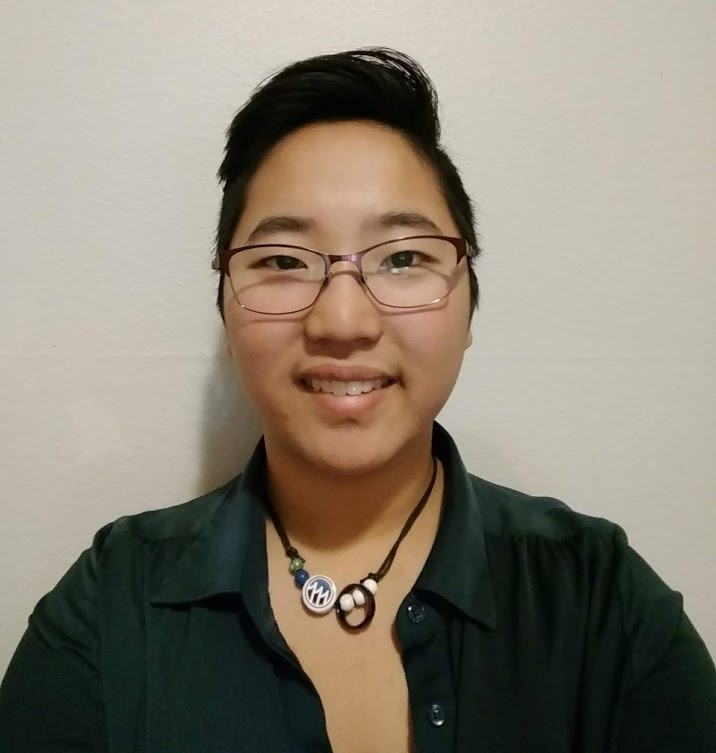
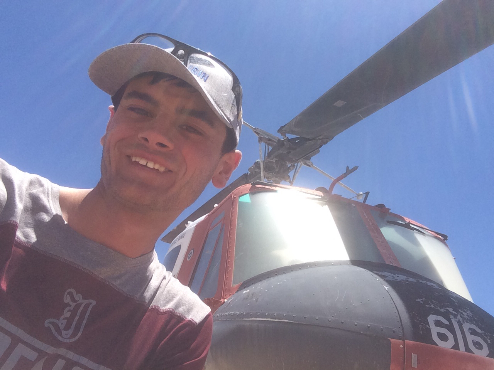
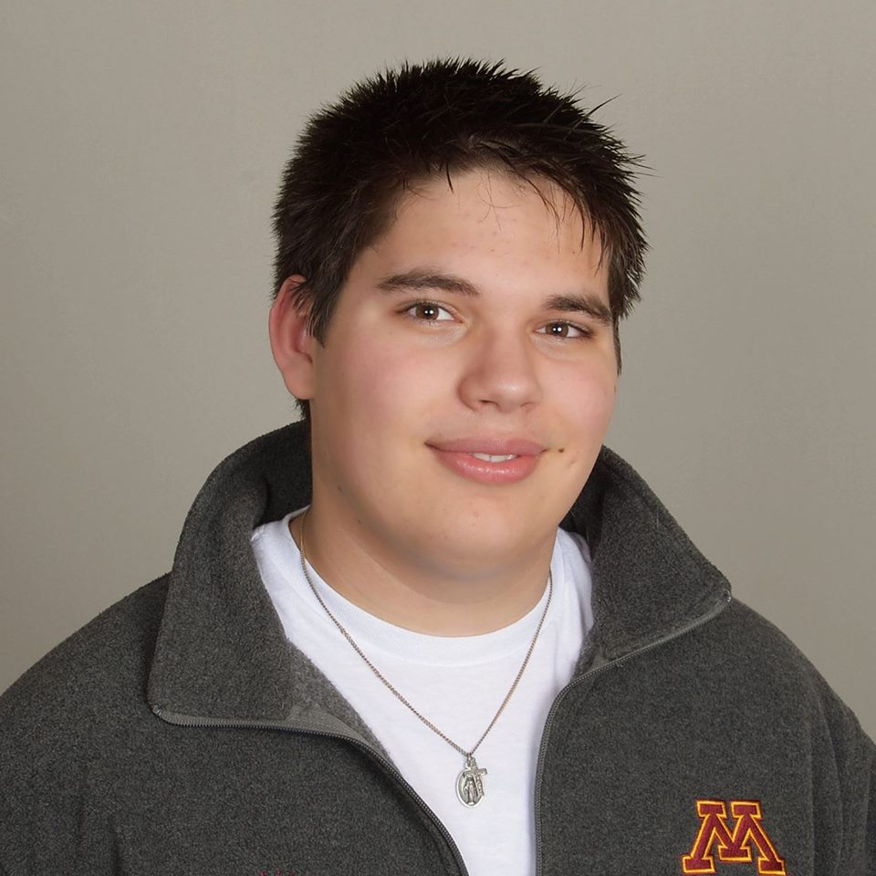
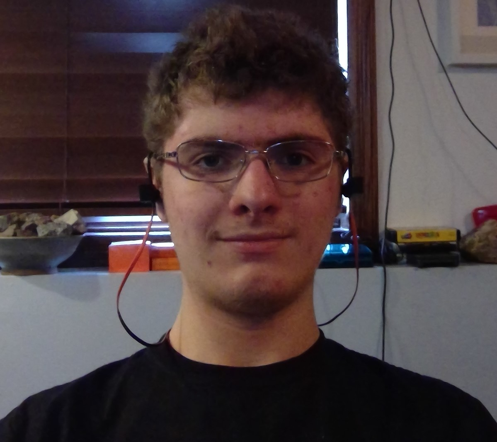

Propulsion Team
Leads: Anna Bialke and Ryan Ichinose
 Anna (résumé).
 Ryan (résumé).
Avionics Team
Lead: Lucas Kramer
 Lucas (résumé).
Flight Team
Lead: Andrew Surine
 Andrew (résumé) is an Brazilian-American student pursuing a degree in Aerospace Engineering and a minor in Entomology at the U of M. Andrew has always dreamed of going into space one day, and is inspired by the design of vehicles that will hopefully carry him there. LPRD has provided Andrew with knowledge and hands-on experience to help him reach this goal; he finds the prospect of building a rocket capable of touching the edge of space incredibly exciting, and is thrilled to be part of the team doing it.
Portal 2's Space Core once uttered a chant that resonates with Andrew:
"Spaaaaaaaaaaaace!"
Recent work: Launched a rocket 3376 feet high, demonstrating live telemetry, dual deploy parachutes, and onboard video (hyperlink video).
Integrations
Officer: Joey Prom
 Joey (résumé) is responsible for overseeing all the engineering operations for LPRD Rocketry. His role can be compared to that of a chief engineer, but with an emphasis on team integration and communication. His fascination with space exploration started in 7th grade, when he read A Man on the Moon. This inspired him to pursue being an astronaut, a goal which lead him to the Aerospace field, specifically rocket propulsion. Following graduation in the spring of 2019, he plans to pursue a graduate degree in rocket propulsion. A fun fact about him: he is one of the original LPRD members, even taking part in the meeting where the final design of the Mk. 1 engine was decided.
Joey (résumé) is responsible for overseeing all the engineering operations for LPRD Rocketry. His role can be compared to that of a chief engineer, but with an emphasis on team integration and communication. His fascination with space exploration started in 7th grade, when he read A Man on the Moon. This inspired him to pursue being an astronaut, a goal which lead him to the Aerospace field, specifically rocket propulsion. Following graduation in the spring of 2019, he plans to pursue a graduate degree in rocket propulsion. A fun fact about him: he is one of the original LPRD members, even taking part in the meeting where the final design of the Mk. 1 engine was decided.
Joey often considers a speech delivered at Rice University in 1962:
“Why choose this as our goal? And they may well ask, why climb the highest mountain? We choose to go to the moon in this decade and do the other things, not because they are easy, but because they are hard. Because that goal will serve to organize and measure the best of our energies and skills. Because that challenge is one that we are willing to accept, one we are unwilling to postpone, and one we intend to win.”
-John F. Kennedy
Recent work: Joey helped develop our Mk. 2 film coolant system, our 2 DOF flight simulator, the preliminary design for the Base 11 Space Challenge, and transforming LPRD Rocketry from a small, slow moving group, to a large, dynamic team focused on winning the Base 11 Space Challenge
Project Management & Business Direction
Officer: Glen Smith
 Glen (résumé) not only manages LPRD recruitment and funding initiatives, but also coordinates its monetary and personnel resources. To him, engineering is professional problem solving, and it drives his passion in every project that he is a part of. He joined LPRD as a freshman because he knew that rocketry is one of the most complex engineering problems one can take on, and he wanted a challenge about which he could be passionate.
Glen (résumé) not only manages LPRD recruitment and funding initiatives, but also coordinates its monetary and personnel resources. To him, engineering is professional problem solving, and it drives his passion in every project that he is a part of. He joined LPRD as a freshman because he knew that rocketry is one of the most complex engineering problems one can take on, and he wanted a challenge about which he could be passionate.
Glen is guided, both literally and metaphorically, by a levitous piece of advice:
"Don't lose small parts"
Recent work: Glen is currently working closely with the avionics team on LPRD, and has been seeking sponsors for our team.